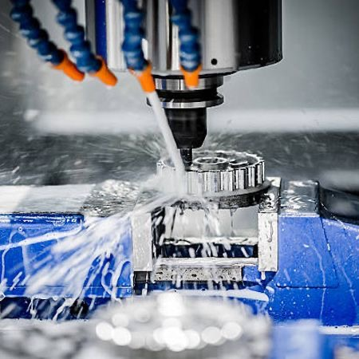

We understand the importance of quality and precision. That's why we've invested in a state-of-the-art in-house Vertical Machining Center (VMC) and Computer Numerical Control (CNC) facility. This allows us to maintain complete control over the production process, ensuring every component is crafted to the highest standards. By combining cutting-edge technology with our dedication to quality, we deliver exceptional results that guarantee customer satisfaction.